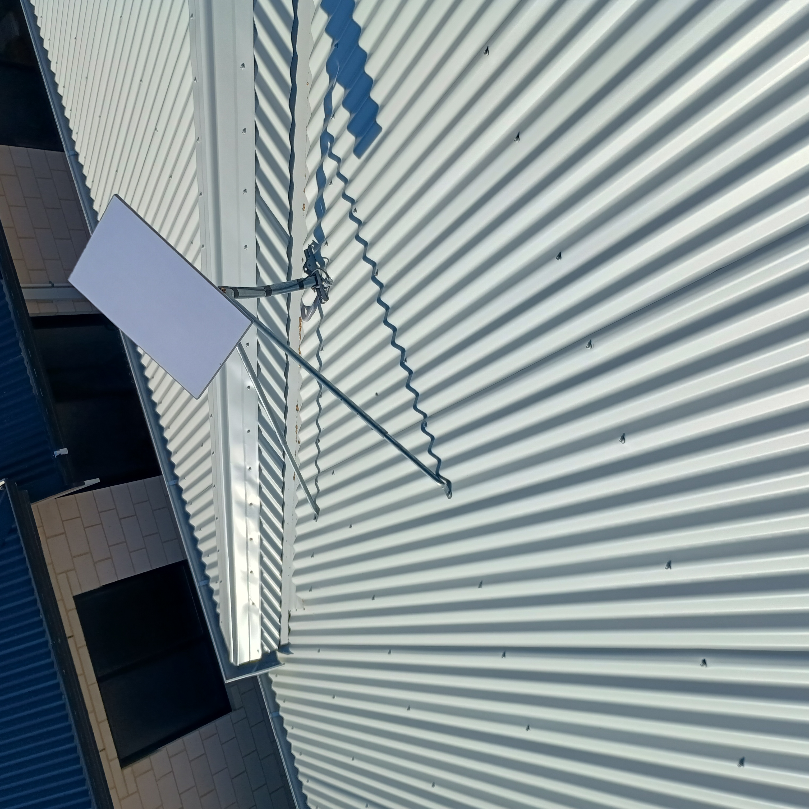
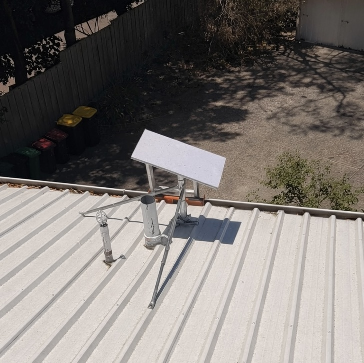

320+
Starlink kits aligned in WA
Starlink installation • Perth northern suburbs
We install Starlink Gen 3 systems on tin, tile and rural properties across Perth’s northern suburbs, handling roof mounts, conduit runs, cable routing and Wi-Fi optimisation so your connection is stable from day one.
320+
Starlink kits aligned in WA
$499 flat
Gen 3 install, sealing and activation included
28 ms
Average latency after tuning
Complete install: roof mount, sealed entry, cable routing & Wi-Fi setup


Performance snapshots
We don’t just install Starlink — we confirm obstruction clearance, test latency and map Wi-Fi coverage so you know your system is performing exactly as it should.
Latency reduced to 31 ms with stable 220 Mbps download after fascia mount and mesh Wi-Fi setup.
Custom 2.4 m mast cleared gum trees, bringing drop-outs from 12/day to zero.
Internal conduit run kept cabling hidden while holding 210 Mbps through brick.
Customer feedback
“Cleanest Starlink install I’ve seen — no cables visible anywhere.”
– Yanchep homeowner
“Fast, tidy and fully explained setup. Our whole home Wi-Fi is finally stable.”
– Butler homeowner
Mount options
Colorbond / Tin Roofs
Included in $499
Tile Roofs
$549
Rural / Obstructed Properties
$680
All installations are completed using weather-rated materials and installed to suit Australian conditions. We ensure every mount is secure, sealed and built to last.
Cable & Wi-Fi packages
We plan every cable route before installation — using internal wall cavities, fascia conduit or ceiling spaces — so your Starlink system looks clean, protected and professionally finished. Pair this with our Wi-Fi upgrades for full-home coverage.
We integrate Starlink into your existing network or install a new system, ensuring strong, stable Wi-Fi coverage across your entire home without dropouts or dead zones.
Service areas
We regularly install and optimise Starlink in Alkimos, Eglinton, Butler, Clarkson, Yanchep, Two Rocks, Mindarie, Joondalup, Wanneroo and rural properties where clean roof mounting and strong in-home Wi-Fi matter most.
Alkimos, Eglinton, Butler and Two Rocks jobs are built for coastal wind, salt air and exposed rooflines with sealed penetrations and weather-rated hardware.
In Clarkson, Mindarie, Butler and Joondalup we combine Starlink setup with mesh Wi-Fi tuning so the connection reaches bedrooms, offices and smart TVs properly.
For Yanchep hinterland, Gingin and larger blocks, we plan mast height, obstruction clearance and long cable routes to keep Starlink stable in difficult locations.
How we install
We assess obstructions, roof structure and the best cable path before installation begins.
Your Starlink system is securely mounted, sealed and routed using professional-grade hardware.
We activate, optimise and test your system — including speed checks and Wi-Fi performance throughout the home.
Common questions
Yes. We carry specific brackets for Colorbond tin, concrete tile, Dektite and fascia mounts so the dish is secure regardless of roof type.
Our $499 Gen 3 installation includes roof mounting, cable routing, weather-proof sealing, Gen 3 activation, Wi-Fi optimisation and speed validation.
We reconfigure your router or supply mesh hardware so Starlink backhaul feeds your existing network without double-NAT issues.
Call us today or request a quote online. We’ll handle the full installation and leave you with a clean setup, strong Wi-Fi and a system that just works.